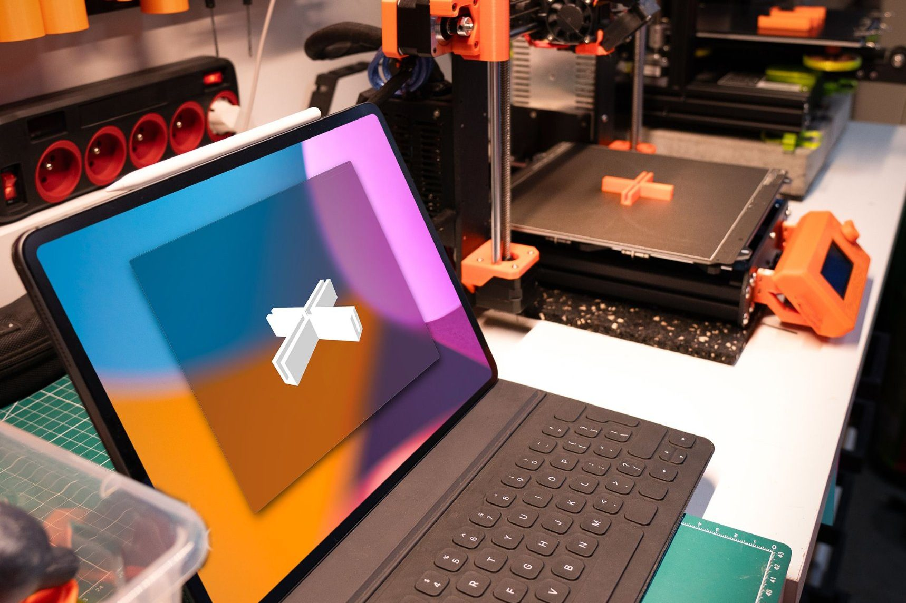
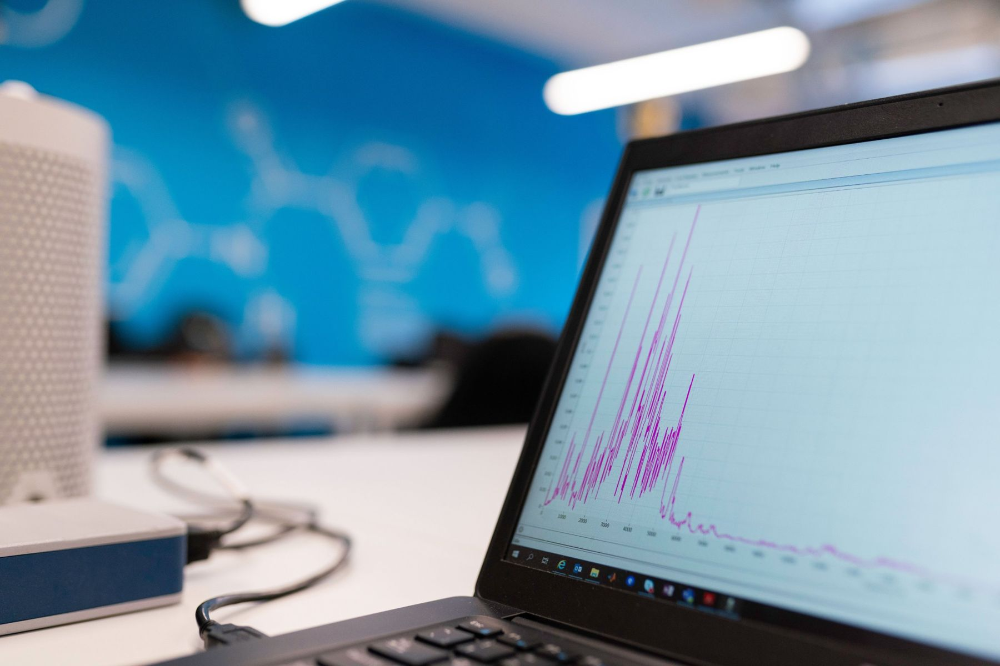
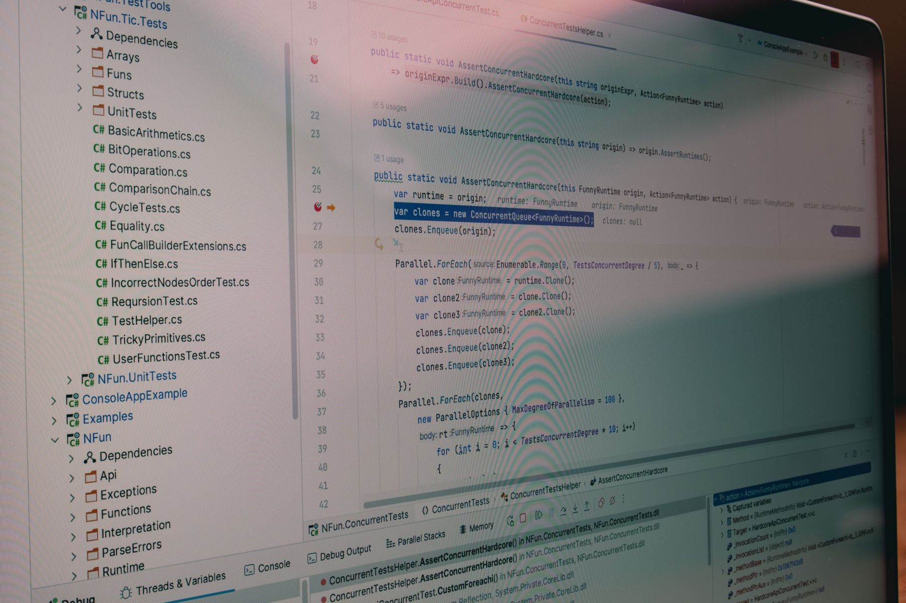
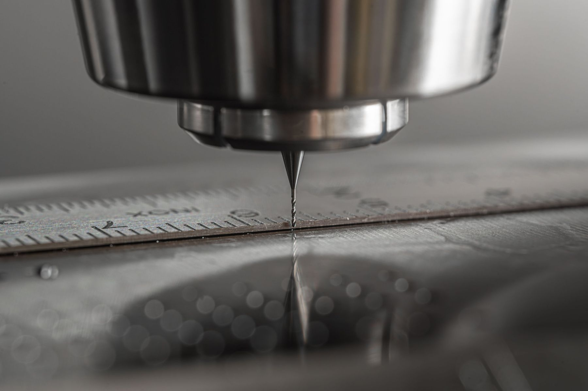
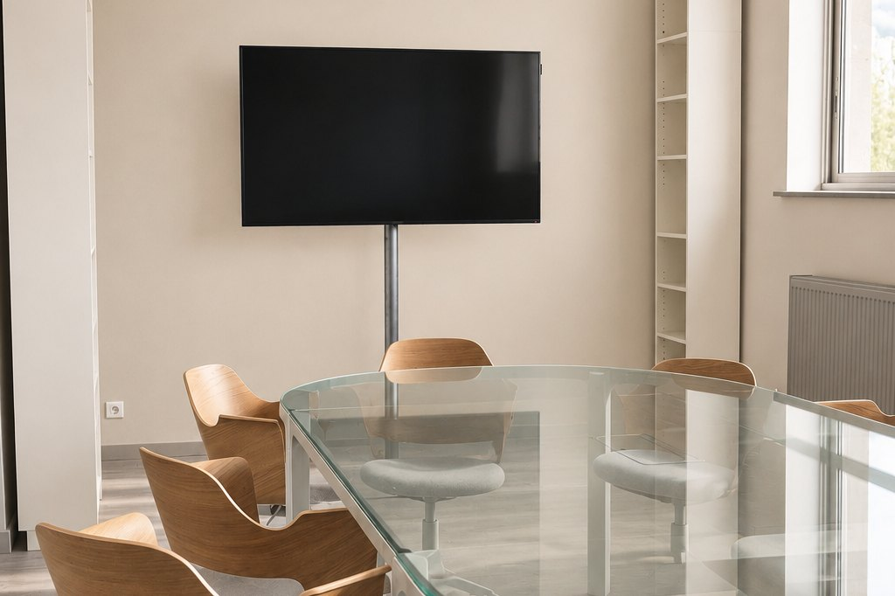

Hard Skills
Design and Modelling: CAD
Three-dimensional design, parametric modelling and technical drawings, from single parts to complete assemblies ready for manufacturing.
- 200+parts and assemblies modelled
- 4CAD software packages used
Hard Skills
Simulation and Analysis
Finite element analysis, flight simulation and machining simulation, with results checked against analytical and reference values.
- ~40simulations run
- 2,300+flight data records analysed


Hard Skills
Programming and Data
Python for data analysis and visualisation, web development in HTML, CSS and JavaScript, and Java, with spreadsheets for quick numerical work.
- 3,000+lines of code written
- 4programming languages
Hard Skills
Manufacturing
Hands-on work with conventional machines, CNC machining, welding and assembly, from raw material to a working mechanism.
- 54 hof hands-on machining and assembly
- 6manufacturing processes

Soft Skills
Languages and Writing
Fluent in four languages, with experience in technical and administrative writing: reports, minutes and presentations, with scientific documents typeset in LaTeX.
- 4languages, two of them native
- 100+documents drafted
- 100%of project reports typeset in LaTeX
Soft Skills
Administrative and Procedural Understanding
Practical knowledge of how an organisation runs, gained during a year on an executive board: supervision and management tasks, procedures, structured documents and databases.
- 1 yearon an executive board

Soft Skills
International Adaptability
Collaboration within diverse teams and with people from many regions of the world, adapting easily to different working styles, languages and perspectives.